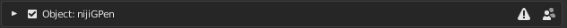
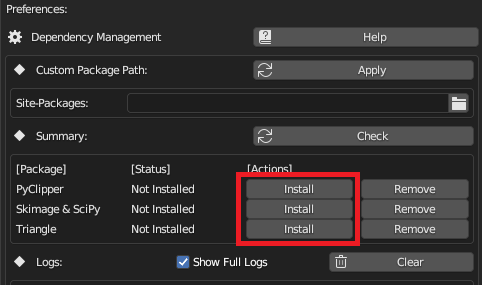

Installation #
Different from most Blender add-ons, NijiGPen relies heavily on third-party Python packages. It is recommended to read the Python Packages page for more details.
Requirements #
- Blender 3.3 ~ 3.6 or 4.0
(Currently, the add-on focuses majorly on stable verions. It is not guaranteed that all functions can work well in alpha or beta verions of Blender.)
Installation Steps #
-
Download the archive file from the GitHub Release page. Please avoid downloading the source code ZIP directly, since it may contain untested changes.
-
In Blender, open
[Edit]->[Preferences]->[Add-ons]and click the Install button to load the archive. Enable the installed add-on.

- Check the dependency summary to decide which Python packages are needed. Install them in the Preferences panel. Internet connection is required.

Upgrade #
-
Blender Upgrade: After upgrading Blender to a new version, the Installation Step 3 (Dependency Management) should be executed again.
-
Add-on Upgrade: If you want to replace the installed add-on with a newer version, it is recommended to remove the old version and restart Blender before installing the new version.
Removal #
Removing the add-on will not automatically remove the Python packages it installed. Please manually remove them using the buttons in the Preferences panel before removing the add-on itself.